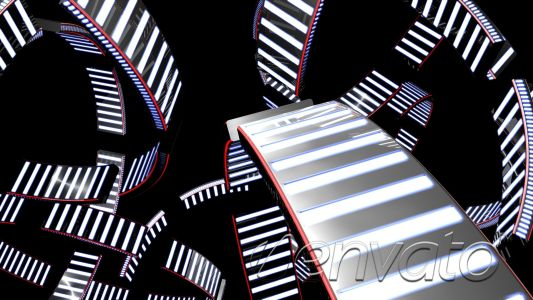
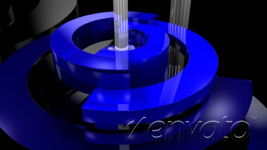

Carousel demo 1


Slideshow is disabled.
$('.example1').jsizedCarousel({
// disable slideshow
changeInterval: 0
});
Carousel demo 2


Image size and delay customized.
$('.example2').jsizedCarousel({
// size of the biggest slide
front : {
width: 350,
height: 250
},
// delay between slide changes
changeInterval: 5,
// distance between slides in px
distanceBetween: 25,
// determinies how much the slides sizes decrease
sizeDecrease : 0.2
});